Week 2 · Day 8 — follow the electrons, not the atoms
Organic Chemistry 1
About this lecture
Every breath out carries CO₂ that your red blood cells first turned into bicarbonate. The enzyme that does it, carbonic anhydrase, holds a hydroxide on a zinc ion. That hydroxide pushes a lone pair onto the carbon of CO₂, and a C=O π pair moves onto oxygen. The enzyme makes this happen about ten million times faster, without changing where the equilibrium lies.
Today we learn the language that describes that event:
Curved arrows: each one moves a pair of electrons from a source to a sink
Bookkeeping: atoms, charges and four bonds to carbon after every step
Three core steps: proton transfer, one-step substitution, addition to C=O
Energy profiles: transition states, intermediates and barriers
Catalysts: a faster path between the same start and end
Yesterday’s stereochemistry comes back today: the SN2 step flips a carbon inside out.
Curved arrows move pairs of electrons
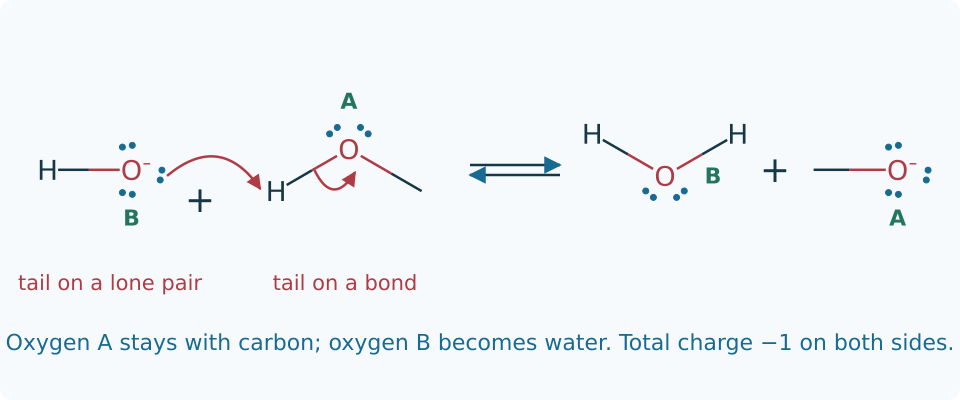
Methanol gives its O–H proton to hydroxide
The tail sits on a lone pair or a bond. The head points to where that pair ends up: a new bond or a new lone pair.
Try it: in the products, which oxygen is in water and which is in methoxide?
B is in water, A stays in methoxide. Only the proton moves; oxygen atoms never hop between molecules in a proton transfer.
A neutral base becomes a cation
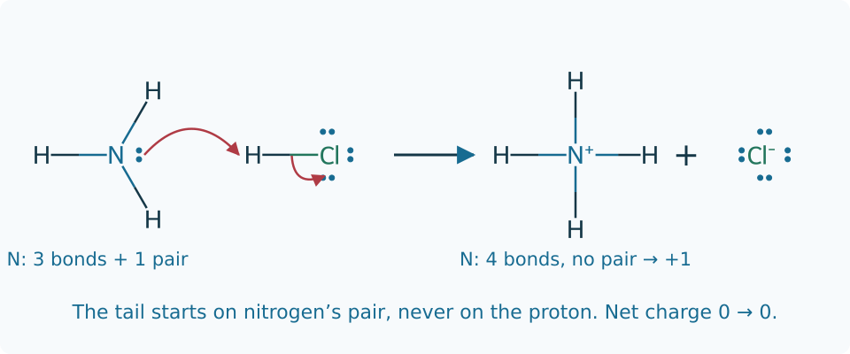
Ammonia takes a proton from HCl
Nitrogen’s lone pair becomes the new N–H bond. Nitrogen now has four bonds and no lone pair, so it carries +1. Chloride keeps the old bonding pair, so it carries −1.
Try it: a student draws an arrow from the H of H₃O⁺ to ammonia. What’s wrong?
The arrow runs backwards. A proton has no electrons to give, so the tail must start on nitrogen’s lone pair and point at H, with a second arrow from the O–H bond to O.
Charges follow the electron count
atom
before the step
after the step
formal charge
N of NH₃ → NH₄⁺
3 bonds, 1 lone pair
4 bonds, 0 lone pairs
0 → +1
O of HO⁻ → H₂O
1 bond, 3 lone pairs
2 bonds, 2 lone pairs
−1 → 0
O of CH₃OH → CH₃O⁻
2 bonds, 2 lone pairs
1 bond, 3 lone pairs
0 → −1
Cl of HCl → Cl⁻
1 bond, 3 lone pairs
0 bonds, 4 lone pairs
0 → −1
An atom whose lone pair becomes a bond goes up by one. An atom that receives a bond pair goes down by one. The total charge never changes.
Sources and sinks
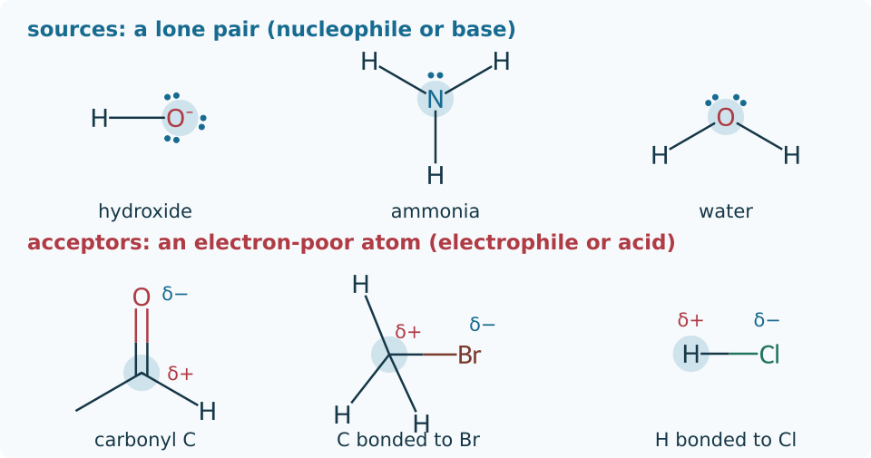
Electron-pair sources and acceptors
A nucleophile gives a pair to an atom; an electrophile accepts it. Polar bonds tell you where the sink is.
Try it: the carbonyl C is δ+. Is acetaldehyde a carbocation?
No. δ+ is a partial charge from unequal sharing; every atom in CH₃CHO has formal charge 0.
Same reagent, different role
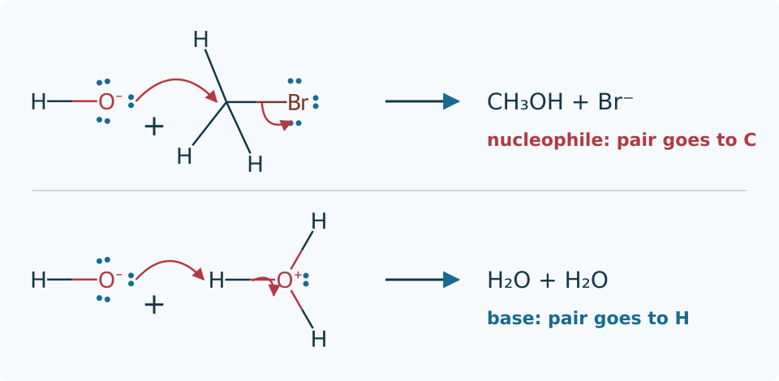
Hydroxide as a nucleophile and as a base
Base and nucleophile aren’t fixed labels. They name what this pair is doing in this step: attacking H makes it a base, attacking another atom (usually C) makes it a nucleophile.
SN2: two arrows, one step
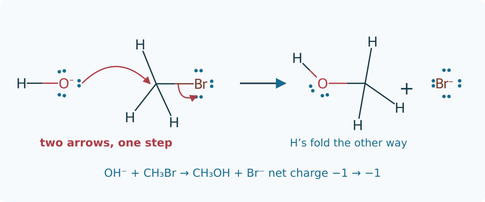
Hydroxide substitutes bromide on bromomethane
The new C–O bond forms as the C–Br bond breaks. Carbon never has five bonds and there’s no intermediate. Hydroxide attacks from the back, so the CH₃ umbrella flips.
Try it: the drawing has two arrows. Is it two steps?
No. The number of steps is the number of barriers, not arrows. Both pairs move in one concerted event.
A neutral nucleophile needs a second step
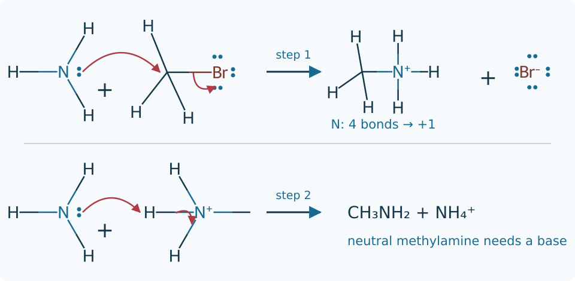
Ammonia substitutes bromide, then a second ammonia removes a proton
The first product is CH₃NH₃⁺: nitrogen has four bonds. Neutral methylamine only appears when another base takes a proton.
Try it: why is CH₃NH₃⁺ not drawn as neutral CH₃NH₂ straight away?
Nitrogen used its lone pair for the C–N bond and kept all three H. Losing an H⁺ needs a real proton acceptor, here a second NH₃.
Balanced on paper isn’t the same as real
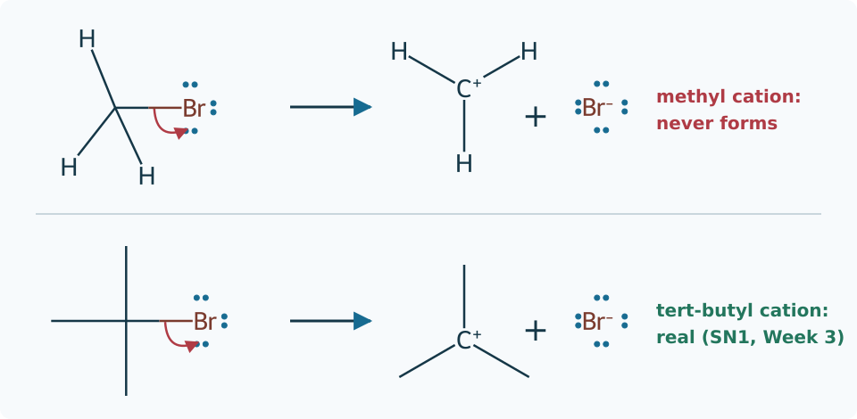
Heterolysis of bromomethane and of tert-butyl bromide
Giving both bond electrons to Br is valid bookkeeping for both. Only the tert-butyl cation is stable enough to exist. Arrows check electrons; energies decide what happens.
Try it: Br⁻ attacking CH₃OH to kick out OH⁻ balances perfectly. Why doesn’t it happen?
OH⁻ is a poor leaving group. It’s a much stronger base than Br⁻, so the reverse SN2 is uphill; you’d need acid to turn OH into water first (Week 3).
Addition to C=O: carbon keeps four bonds
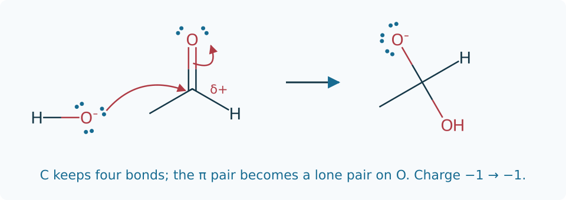
Hydroxide adds to acetaldehyde
When a nucleophile bonds to the carbonyl carbon, the π pair must move to O. The product is a tetrahedral alkoxide, CH₃CH(OH)O⁻.
Try it: a student keeps C=O and adds the OH. What’s wrong, and what’s the product’s charge?
Carbon would have five bonds. Moving the π pair gives O⁻ with three lone pairs, so the product is CH₃CH(OH)O⁻, charge −1, with C at formal charge 0.
Two steps: add, then protonate
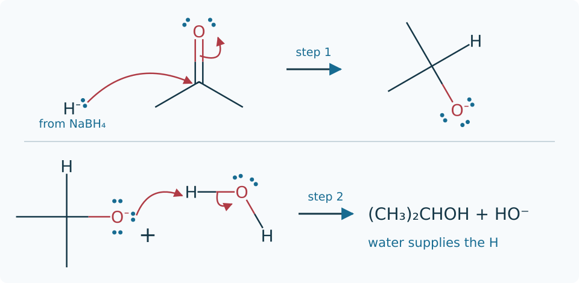
Hydride adds to acetone, then water protonates the alkoxide
NaBH₄ delivers H⁻ to carbon. The alkoxide then takes H⁺ from water. Every new H must come from a named species.
Try it: a student converts (CH₃)₂CHO⁻ into (CH₃)₂CHOH with no other reagent. Complete the step.
Add water as the donor. The O⁻ lone pair takes a water H, the O–H pair goes to water’s O, and the products are propan-2-ol and HO⁻. The total charge stays −1.
Resonance is not a reaction
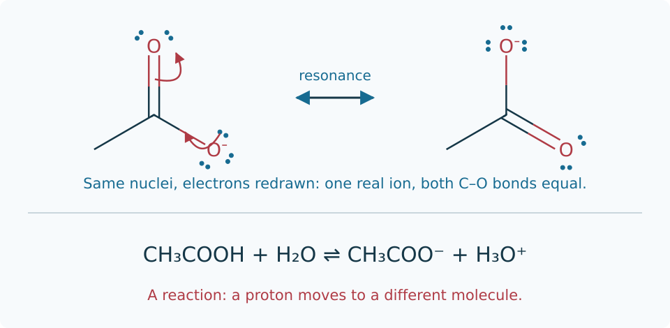
Acetate resonance contributors and acetic acid dissociation
resonance ↔︎
equilibrium ⇌
what moves
only electrons, on paper
nuclei: an H goes to another molecule
how many species
one real ion
two different species
Energy profile of one step
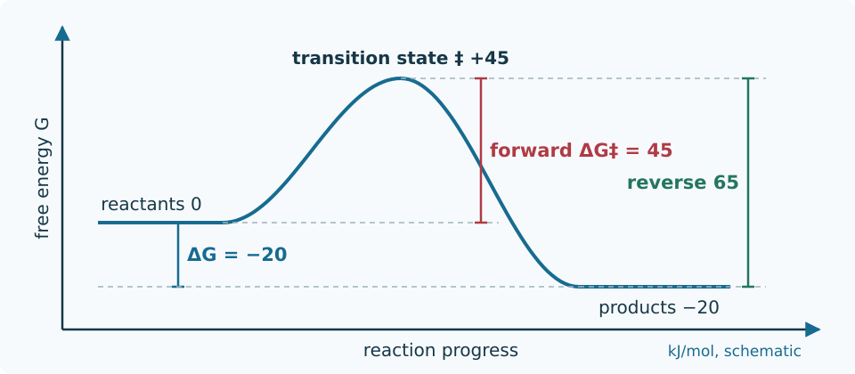
A one-step profile with forward and reverse barriers
The top of the hill is the transition state (‡): it lasts for one bond vibration and can’t be isolated. ΔG‡ sets the rate; ΔG sets the equilibrium.
Try it: what’s the reverse barrier here?
65 kJ/mol. Measure from the products up to the same transition state: 45 − (−20) = 65.
Intermediates sit in valleys
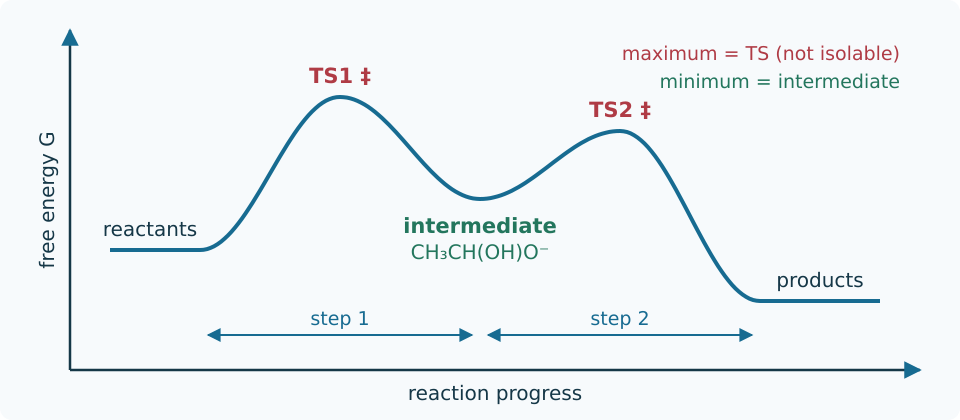
A two-step profile with an intermediate
An intermediate is a real species with a lifetime. It sits in a minimum between two transition states. Count steps by counting maxima: two maxima and one valley means two elementary steps.
Favourable is not the same as fast
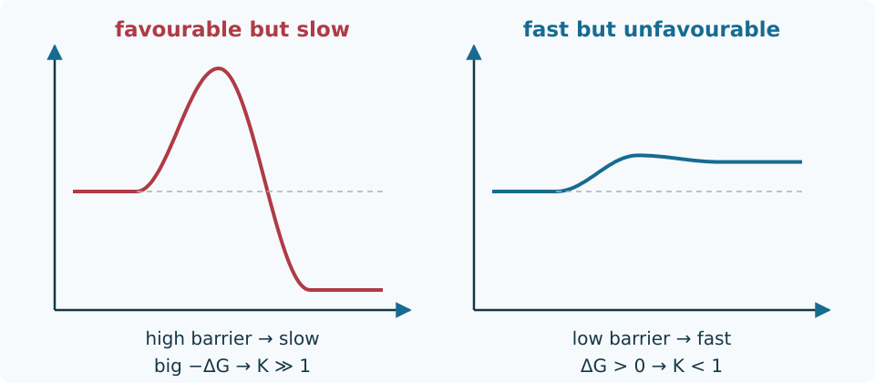
Favourable but slow versus fast but unfavourable
Sugar plus O₂ is hugely downhill, yet a sugar bowl doesn’t burst into flames: the barrier is high. Endpoints set K; barriers set the rate. Given paths with 15 and 25 kJ/mol barriers, the 15 one is faster.
Catalysts are regenerated
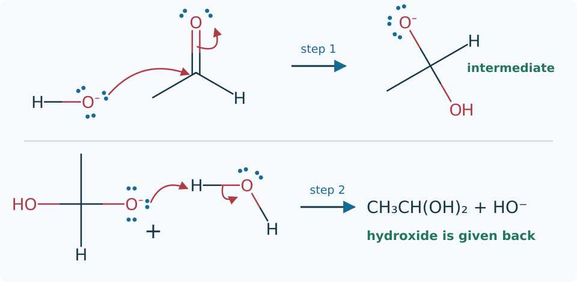
Base-catalysed hydration of acetaldehyde
Add the steps and cross out what appears on both sides: CH₃CHO + H₂O ⇌ CH₃CH(OH)₂. Hydroxide is used in step 1 and returned in step 2, so it’s a catalyst; the alkoxide is an intermediate.
A catalyst lowers the barrier, not ΔG
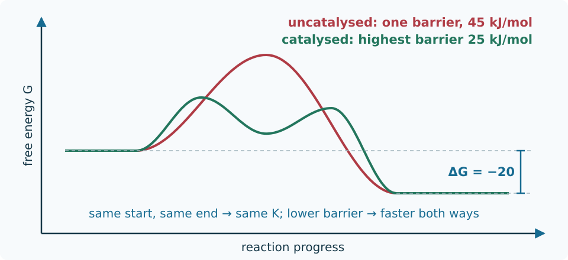
Catalysed and uncatalysed profiles between the same endpoints
The catalysed path is different, often with more steps, but it starts and ends at the same place. Both directions get faster, so equilibrium is reached sooner but K doesn’t change.
Mistakes we see every year
mistake
fix
arrow from H⁺ to the base
start at the lone pair, point at H
carbon with five bonds after an addition
move the π pair to O
product drawn without its charge
recount: total charge is conserved
H appears from nowhere
name the proton donor and its conjugate base
two arrows read as two steps
steps = barriers, not arrows
balanced drawing taken as proof
check the energies (cation stability, leaving group)
catalyst “shifts equilibrium to products”
it lowers barriers both ways; K is unchanged
Summary
concept
key fact
curved arrow
moves one pair: lone pair or bond → new bond or lone pair
charges
lone pair → bond: +1; bond pair received: −1
roles
pair to H = base; pair to C = nucleophile
SN2
one step, two arrows, attack from the back
addition to C=O
π pair to O → tetrahedral alkoxide
transition state
maximum ‡, not isolable
intermediate
minimum between two steps
barriers vs ΔG
ΔG‡ → rate; ΔG → K
catalyst
regenerated; lower barrier, same K
Next: substitution, SN2 versus SN1 (Day 11). Practice:exercises · self-check